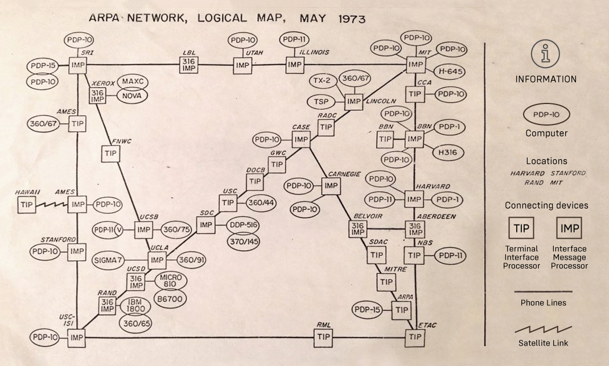

A internet, que começou como um projeto militar na década de 1960, evoluiu para se tornar a principal ferramenta de comunicação global, conectando bilhões de pessoas.
A história da internet remonta à Guerra Fria (1945-1991), quando os Estados Unidos, temendo um ataque soviético, buscaram desenvolver um sistema de comunicação que pudesse resistir a possíveis desastres. Em 1969, a ARPANET (Advanced Research Projects Agency Network) foi criada pelo Departamento de Defesa dos EUA, permitindo a troca de informações entre universidades e centros de pesquisa.

Na década de 1980, a internet começou a se expandir para usos comerciais e privados. O desenvolvimento do TCP/IP (Transmission Control Protocol/Internet Protocol) foi crucial, pois permitiu que diferentes redes se comunicassem entre si, formando a base da internet moderna.
Em 1990, Tim Berners-Lee criou a World Wide Web, facilitando o acesso à internet através de navegadores, tornando-a mais acessível ao público em geral.
Veja mais sobre ele: Perfil oficial de Tim Berners-Lee
A internet chegou ao Brasil em 1988, com uma conexão entre a Universidade Federal do Rio de Janeiro e a Universidade de Maryland, nos Estados Unidos. A partir de 1994, a internet se tornou pública e comercial.
Hoje, a internet conecta bilhões de pessoas no mundo e revolucionou a forma como nos comunicamos, trabalhamos e acessamos informações.
| Ano | Evento | Importância |
|---|---|---|
| 1969 | Criação da ARPANET | Primeira rede que conecta universidades |
| 1983 | TCP/IP se torna padrão | Base da internet moderna |
| 1990 | Tim Berners-Lee cria a Web | Acesso simplificado à informação |
| 1993 | Mosaic, primeiro navegador gráfico | Popularização da web |
| 1994 | Internet pública no Brasil | Início da conectividade comercial |
| A internet e web continuam evoluindo até hoje | ||
Fontes e links:
História da Internet - Wikipedia
História da Web - W3C